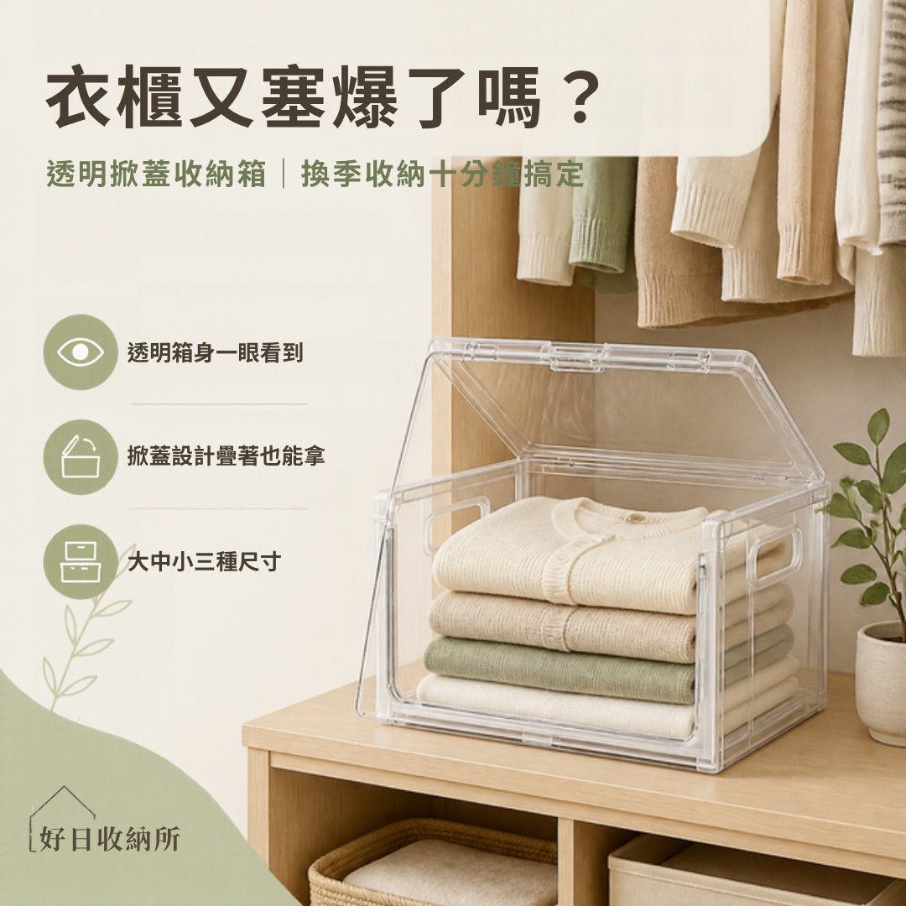
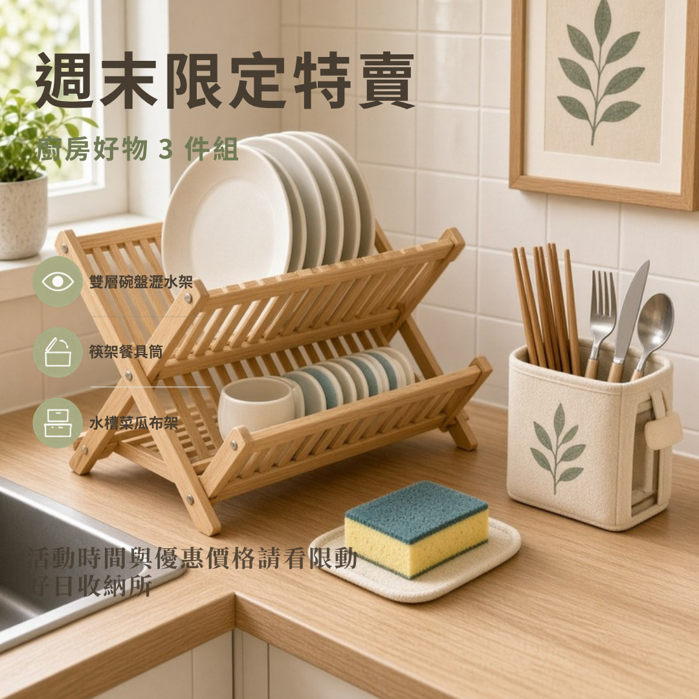
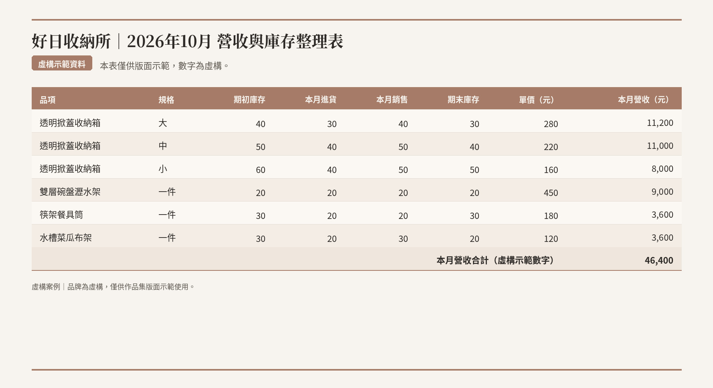
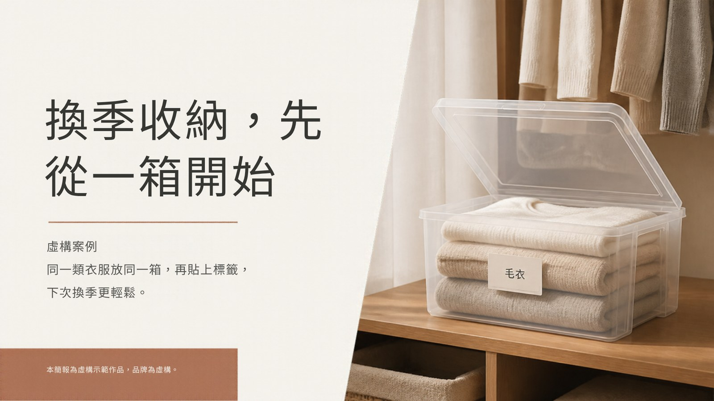
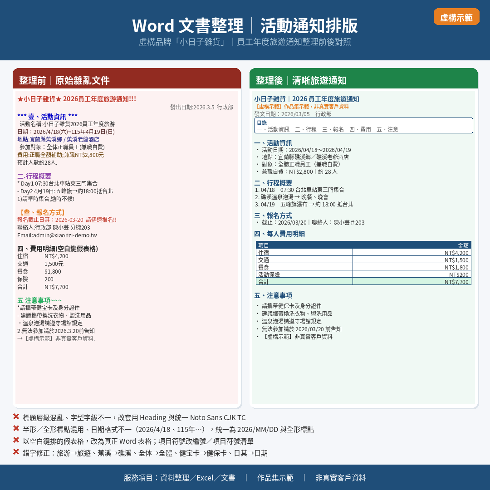
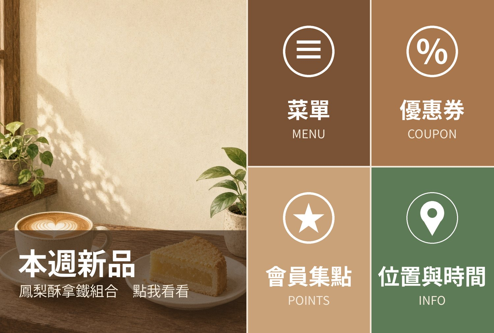
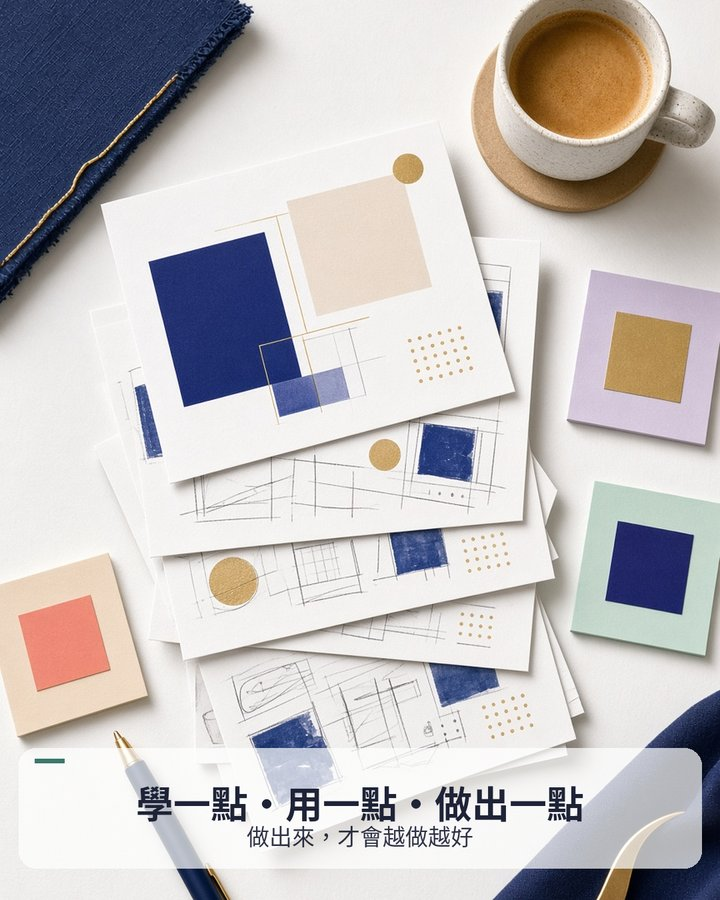

澄言理財小教室（虛構示範）
用讀者真正會卡住的問題當開頭，讓人願意看下去。
你是不是也遇過這種情況：年底一到，同事開始聊「有沒有報過這個」、「那個能不能抵」，自己卻越聽越亂？其實多數人卡住的地方，不是不夠努力查資料，而是資訊太散、說法又不一。
我善用 AI 工具來加快起草、整理和構圖，再自己檢查用字、版面和正確性，讓交付既有效率、也有品質。
我用 AI 幫你把文件、表格、簡報、文案和視覺做出來。
先給預覽稿，確認符合約定並付清尾款後，再依事先約定的交付格式提供正式成品及相關檔案。付款與修改規則，請見合作流程。
歡迎透過官方 LINE 文字洽詢。
適合：公告、簡章、報告、表單、履歷
交付：排版好的 Word 檔＋PDF 檔，統一字型、標題層級、頁碼與目錄
適合：營收表、庫存表、名單、報價單
交付：整理好的 Excel 檔，資料清理、公式加總、篩選排序、表格美化與 A4 列印設定
適合：提案、新品介紹、活動說明、對內報告
交付：PPT 檔＋PDF 檔，整理重點、統一版型、圖表與配圖
適合：宣傳文案、活動主視覺、IG／FB 貼文圖文、LINE 官方帳號圖文選單與推播圖
交付：文案稿與圖檔；社群圖做好後交給店家自行上傳
報價：依需求報價。先確認內容與交期，再報固定價。
以下先看示範作品，品牌為虛構，僅供了解成品樣貌。每件作品底下有一行說明：這件示範想解決什麼問題。

讓商品重點一眼看懂，店家可直接拿去發貼文。

把促銷資訊排清楚，減少臨時拼圖文的時間。

可左右滑動查看
把散落的數字收成可篩選、可加總、也方便列印的表格。

把產品重點整理成統一版型，方便對內說明、對外介紹。

把雜亂的活動通知整理成層級清楚、可列印的正式文書。
用 AI 繪圖做出活動主視覺，供宣傳使用。

讓顧客在官方帳號裡，快速找到菜單、優惠、集點與位置時間。
用讀者真正會卡住的問題當開頭，讓人願意看下去。
你是不是也遇過這種情況：年底一到，同事開始聊「有沒有報過這個」、「那個能不能抵」，自己卻越聽越亂？其實多數人卡住的地方，不是不夠努力查資料，而是資訊太散、說法又不一。
先回應客人最在意的顧慮，而不是先說自己很專業。
預約美容、美甲、霧眉之前，你最在意的通常不是「看起來很厲害」，而是：會不會痛？要休息幾天？會不會跟我原本想像差很多？
把複雜的產品資訊，收成一句人會真正想問的話。
貨架上的補充食品越來越多，包裝也越來越會說話。可是打開來看，很多人真正想問的只有一句：「這個適合我現在的生活節奏嗎？」
以下是我經營自己帳號時，實際製作的作品。
把 Facebook 和使用說明收進選單，訪客比較容易找到要的入口。

用統一的文案和配圖，讓人認識「簡沛賞｜AI訓練師」。
把 Facebook 和作品集放進選單，讓人直接找到追蹤與看作品的入口。
我是簡沛賞，個人品牌是「簡沛賞｜AI訓練師」。我用 AI 幫你把文件、表格、簡報與文案做好。這是我的個人品牌稱號。我不是 AI 講師，不開課、也不做模型訓練。
夜校資料處理科畢業後，我工作了 16 年。我在家裡的便當店工作過，也做過工廠、飯店房務、宴會廳兼職服務人員，以及加油站的工作。這些年讓我習慣把交代的事情做完、做仔細，並準時交出去。
我相信每一份委託，不論大小，都值得被認真對待。
我運用 AI 輔助工具進行文件整理、簡報製作、文案撰寫及視覺設計，並重視內容的正確性、版面呈現與實際使用需求，希望透過科技工具，提供更有效率的數位服務。
持有電腦軟體應用丙級技術士證。
合作方式很單純：歡迎透過官方 LINE 文字洽詢。付款與修改規則，請見合作流程。
有需要歡迎加官方 LINE：@670luclt
若因我方原因無法完成約定工作，或經 2 次合理修改後仍明顯不符合原先確認的需求，可終止委託，並全額退還已收取的 30% 預付款。詳細修改與退款規則，於報價確認時提供。
付款說明：統一使用中華郵政（郵局）帳戶收款，匯款資訊於確認合作內容及報價後提供。可使用郵局或其他銀行轉帳，客戶付款銀行或金融機構收取的轉帳手續費由客戶自行負擔；預付款及尾款均以實際入帳金額為準。
需求、報價、交期與修改範圍，歡迎透過官方 LINE 文字洽詢。
報價：依需求報價。先確認內容與交期，再報固定價。
不接需簽保密協議或機密資料、不接到場工作、暫無法開立發票。
請用官方 LINE 以文字洽談；為避免漏掉您的訊息，合作詢價請優先透過官方 LINE 聯繫，不接受視訊。
官方 LINE：@670luclt
歡迎提供需求、參考範例、希望完成日期及預算，我會先確認是否能承接，再提供報價。
為了確保需求與報價紀錄完整，接案洽詢統一透過官方 LINE 文字溝通，暫不提供視訊洽談。